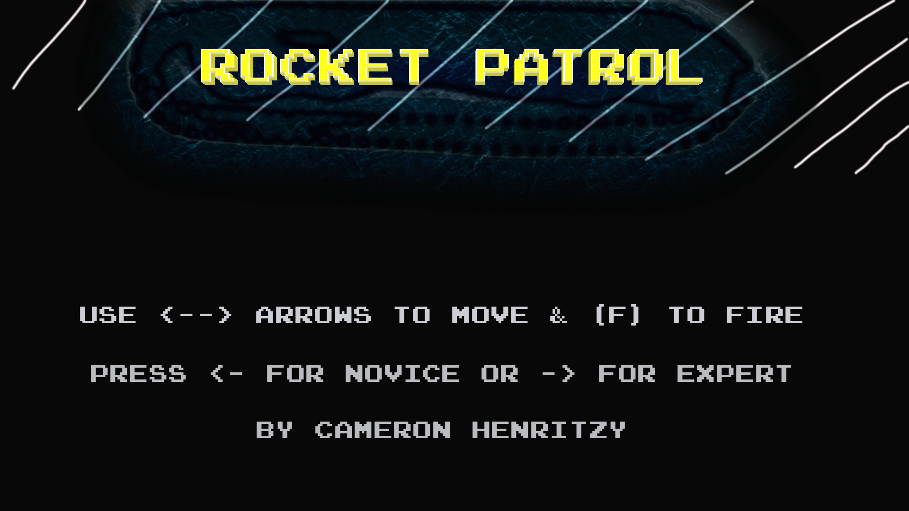

<!DOCTYPE html>
<html lang="en">
<head>
    <meta charset="UTF-8">
    <meta http-equiv="X-UA-Compatible" content="IE=edge">
    <meta name="viewport" content="width=device-width, initial-scale=1.0">
    <title>Rocket Patrol</title>
    <style>
        body {
            background-color: darkslateblue;
        }
    </style>
</head>
<body>

    <script src = "./lib/phaser.js"></script>
    <script src = "./src/prefabs/Rocket.js"></script>
    <script src= "./src/prefabs/Spaceship.js"></script>
    <script src="./src/scenes/StartScreen.js"></script>
    <!--- Comment out below menu line when you wnat to implement the StartScreen scene-->
    <!--- <script src = "./src/scenes/Menu.js"></script> --->
    <script src = "./src/scenes/Play.js"></script>
    <script src = "./src/main.js"></script>
    <!--- The below line is just the image for the title screen I'm using-->
    <!--- </img> --->
</body>
</html>
